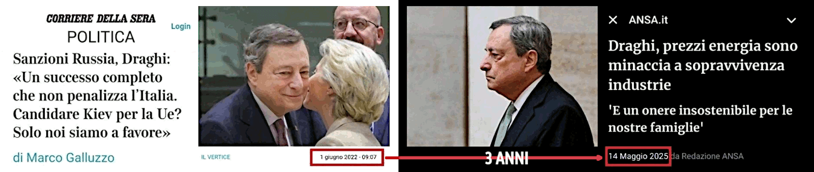

Il punto della situazione con la Russia
1st edition: pubblicato lo stesso giorno in una serie di commenti su X poi raccolti in un post su Facebook.
2nd edition: immagine aggiornata con una più aderente al tema, la precedente è disponibile qui.
Non c'è nulla da capire.
Come la Merkel ammise nel tardo 2022, gli accordi di Minsk I e II sono stati siglati sapendo che noi occidentali li avremmo violati, poi G20 a Bali 2023, anche. A questo punto è chiaro che con le buone o le cattive si prendono l'Ucraina per sicurezza.
Ora, mettetevi nei panni dei Russi - o se vi piace di più nei panni di Putin - le uniche condizioni ai tempi di Minsk erano: Ucraina mai nella NATO e accesso al mar Nero tramite la Crimea. Per il resto UA può essere UE.
La Russia era più americana dell'Italia e la UA sarebbe entrata nella UE. Invece NO!
Abbiamo dovuto sorbirci una gestione delinquente della pandemia per forzare il lavoro da remoto e mappare le "risorse umane" in termini di capacità bellica. La più grande esercitazione NATO prima di allora in Ucraina in Q3/2021.
Poi guerra, missili mach 10, game over.
Sorpresi che la Russia voglia mettere in sicurezza l'Ucraina dopo che la CIA l'ha ri-popolata di nazisti, dopo che abbiamo violato patti per 30 anni: non un pollice a est?
Però le sanzioni avrebbero dovuto portare la Russia al fallimento e all'isolamento geopolitico, invece no.
Quindi gli USA hanno fatto le rivoluzioni in Ucraina per instaurare una dittatura militare, la NATO ha fatto la guerra contro la Russia, in Ucraina.
Disfatta su tutti i fronti, eppure si continua a pretendere di poter porre condizioni sulla base della NOSTRA propaganda/agenda?
Insomma, direi che è un po' presuntuoso da parte nostra pensare che i russi siano tutti idioti.
Poi, non è che ci stia andando meglio con gli africani e gli arabi, una volta che questi hanno capito come si devono trattare i "bianchi".
Niger, Houthi, Afghanistan, etc. docet
Sapete qual'è la radice di quest'epica sconfitta e forse del collasso nostra stessa civiltà?
Si riassume in una frase, tanto banale quanto letale.
La realtà è una costruzione collettiva. WRONG!
Quella si chiama propaganda, per definizione, e NOI siamo rimasti vittime della NOSTRA propaganda.
Draghi's report vs Ciuchino meme (2024-09-14)
La semplicità delle direttive in caso di crisi (2024-12-29)
Ora sarebbe il caso di mettere sotto processo coloro che ci hanno inebetito riempiendo i media di falsità invece di continuare a pretendere che gli ALTRI si adeguino alle nostre menzogne.
Infine, l'ovvio viene accettato
La dichiarazione di Mario Draghi del 15 maggio 2025 mostra chiaramente l'evoluzione della versione ufficiale sullo stato delle cose negli ultimi tre anni, il tempo che è stato necessario per accettare la realtà e ufficializzare l'ovvio.
Perché che fosse ovvio, in termini di opinione pubblica, si sarebbe già dovuto sapere dal Q4/2022 dopo che la Merkel rivelò, in un'intervista concessa ad un'importante rivista tedesca, le reali motivazioni dietro degli accordi di Minsk I e II.
Le date conosciute e documentate sono quelle delle pubblicazioni: Der Spiegel, novembre 2022 e Die Zeit, 7 dicembre 2022. Tuttavia, è assolutamente ragionevole che l'intervista sia stata effettuate settimane prima, anche verso la fine di settembre 2022.
Un ritardo fra il rilascio dell'intervista e la sua pubblicazione, per diverse ragioni molto concrete: figura politica di primo piano che rilascia dichiarazioni di portata storica in un momento molto delicato e in un contesto esplosivo che richiede verifiche rigorose, consultazioni con attori istituzionali fra cui è ragionevole inserire anche i vertici europei della NATO, almeno tramite il capo dell'esercito tedesco e/o del Cancelliere in carica, ed un'eventuale revisione dell'intervista stessa coerente con un ciclo di approvazione complesso.
Dichiarazioni che sicuramente NON sono state fatte e pubblicate SENZA un intento preciso, urgente — che non si poteva aspettare le fine della guerra — e di estrema importanza. Quindi una comunicazione strategica come atto politico collettivo in seno alla Germania di cui si fece personalmente carico la Merkel come ex-Cancelliera ma che era in carica al tempo dei fatti.
Continuazione
Non c'è il 2° podio negli schemi Ponzi (2025-05-16)
Share alike
© 2025, Roberto A. Foglietta <roberto.foglietta@gmail.com>, CC BY-NC-ND 4.0